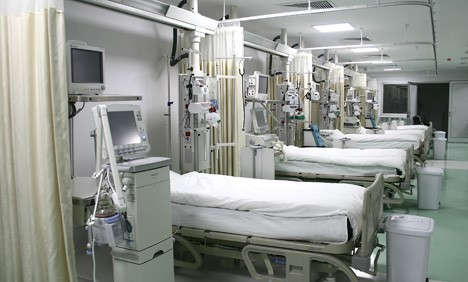

Visiting guidelines for Intensive Care Units (ICUs) |
|
|---|---|
|
All Intensive Care Units (ICUs) areas are restricted areas. Visitors are requested to adhere to protocol and wear isolation gown, mask, gloves, shoe covers and use hand sanitiser available at the hospital before and after entering these areas. • To minimise the risk of infection, only one attendant at a time is allowed for a maximum of 10 minutes. Visitors are requested to wait for their turn to enter these special zones. • It is expected that visitors will: 1. Not visit if the visitors are sick. 2. Comply with safety and security procedures. 3. Wear and display their visitor identification card at all times while in patient/restricted areas. 4. Leave the hospital during a disaster or fire alarm. 5. Patients are the responsibility of the hospital and will be rescued as per an evacuation plan. 6. Act in a respectful manner. • Unacceptable behaviour includes but is not limited to: 1. Unreasonable interference with a patient’s plan of care. 2. Harassment of any kind, including inappropriate telephone calls to a staff member. 3. Use of loud, threatening, abusive or obscene language. 4. Use of physical violence or acting in a threatening manner towards staff. 5. Arriving under the influence of drugs or alcohol. 6. Damage to hospital property. 7. Theft. 8. Possession of weapons or firearms. 9. Disturbance to other patients. |
 |